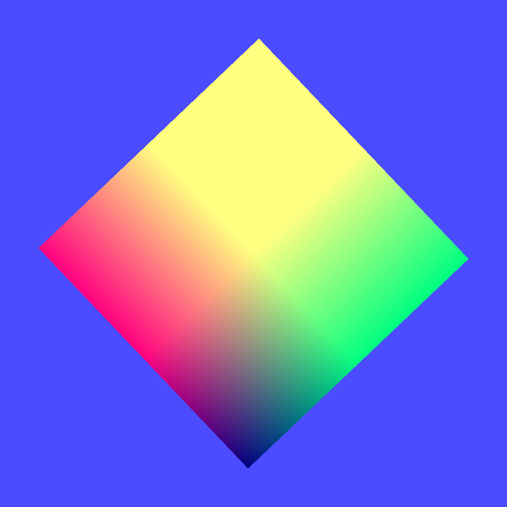

13 - Framepuffer
02 - Framepuffer speichern

Eine Scene kann man auch in eine Textur render, anstelle des Bildschirmes.
Man kann dies auch gebrauchen, wen man eine Scene in einen Rückspiegel rendern will.
Deklaration der Vertexkonstanten des Quadrates, welches in die Textur gerendert wird.
const
// --- Vectoren
QuadVertex: array[0..1] of Tmat3x3 =
(((-0.3, 0.3, 0.0), (-0.3, -0.3, 0.0), (0.3, -0.3, 0.0)), ((-0.3, 0.3, 0.0), (0.3, -0.3, 0.0), (0.3, 0.3, 0.0)));
// --- Farben
QuadColor: array[0..1] of Tmat3x3 =
(((0.0, 2.0, 0.5), (0.0, 0.0, 0.5), (2.0, 0.0, 0.5)), ((0.0, 2.0, 0.5), (2.0, 0.0, 0.5), (2.0, 2.0, 0.5)));
Koordinanten des Würfels, auf dem die Texturen abgebidet werden, auf dem ein drehendes Rechteck abgebildet ist.
const
// --- Vectoren
CubeVertex: array[0..11] of Tmat3x3 =
(((-0.5, 0.5, 0.5), (-0.5, -0.5, 0.5), (0.5, -0.5, 0.5)), ((-0.5, 0.5, 0.5), (0.5, -0.5, 0.5), (0.5, 0.5, 0.5)),
((0.5, 0.5, 0.5), (0.5, -0.5, 0.5), (0.5, -0.5, -0.5)), ((0.5, 0.5, 0.5), (0.5, -0.5, -0.5), (0.5, 0.5, -0.5)),
((0.5, 0.5, -0.5), (0.5, -0.5, -0.5), (-0.5, -0.5, -0.5)), ((0.5, 0.5, -0.5), (-0.5, -0.5, -0.5), (-0.5, 0.5, -0.5)),
((-0.5, 0.5, -0.5), (-0.5, -0.5, -0.5), (-0.5, -0.5, 0.5)), ((-0.5, 0.5, -0.5), (-0.5, -0.5, 0.5), (-0.5, 0.5, 0.5)),
// oben
((0.5, 0.5, 0.5), (0.5, 0.5, -0.5), (-0.5, 0.5, -0.5)), ((0.5, 0.5, 0.5), (-0.5, 0.5, -0.5), (-0.5, 0.5, 0.5)),
// unten
((-0.5, -0.5, 0.5), (-0.5, -0.5, -0.5), (0.5, -0.5, -0.5)), ((-0.5, -0.5, 0.5), (0.5, -0.5, -0.5), (0.5, -0.5, 0.5)));
// --- Texturkoordinaten
CubeTextureVertex: array[0..11] of Tmat3x2 =
(((0.0, 1.0), (0.0, 0.0), (1.0, 0.0)), ((0.0, 1.0), (1.0, 0.0), (1.0, 1.0)),
((0.0, 1.0), (0.0, 0.0), (1.0, 0.0)), ((0.0, 1.0), (1.0, 0.0), (1.0, 1.0)),
((0.0, 1.0), (0.0, 0.0), (1.0, 0.0)), ((0.0, 1.0), (1.0, 0.0), (1.0, 1.0)),
((0.0, 1.0), (0.0, 0.0), (1.0, 0.0)), ((0.0, 1.0), (1.0, 0.0), (1.0, 1.0)),
((0.0, 1.0), (0.0, 0.0), (1.0, 0.0)), ((0.0, 1.0), (1.0, 0.0), (1.0, 1.0)),
((0.0, 1.0), (0.0, 0.0), (1.0, 0.0)), ((0.0, 1.0), (1.0, 0.0), (1.0, 1.0)));
Grösse der Textur, auf welcher das Quadrat gerendert wird.
const
TexturSize = 1024;
Das es 2 Meshes gibt, werden die Vectorbuffer und die Matrix für die Bewegung doppelt gebraucht.
var
// ID der Textur.
textureID: GLuint;
// Render Puffer
FramebufferName, depthrenderbuffer: GLuint;
Die Textur, in dem die Scene gerender wurde, kann man auch abspeichern.
Hinweis: Das Bild kann evtl. fehlerhaft abgespeichert werden, da die OS abhängig ist.
Dieser Code wurde unter Linux 64Bit getestet.
procedure TForm1.ButtonSaveClick(Sender: TObject);
var
Picture: TPicture;
begin
Picture := TPicture.Create;
with Picture do begin
Bitmap.PixelFormat := pf32bit;
Bitmap.Width := TexturSize;
Bitmap.Height := TexturSize;
glBindFramebuffer(GL_FRAMEBUFFER, FramebufferName);
glReadPixels(0, 0, TexturSize, TexturSize, GL_RGBA, GL_UNSIGNED_BYTE, Bitmap.RawImage.Data);
SaveToFile('test.png');
end;
Picture.Free;
end;
Erzeugen der Puffer, Shader und Matrizen, eigentlich nichts besonders.
procedure TForm1.CreateScene;
begin
// Vertex Puffer erzeugen.
glGenVertexArrays(1, @VBQuad.VAO);
glGenBuffers(1, @VBQuad.VBOVertex);
glGenBuffers(1, @VBQuad.VBOTex);
glGenVertexArrays(1, @VBCube.VAO);
glGenBuffers(1, @VBCube.VBOVertex);
glGenBuffers(1, @VBCube.VBOTex);
// Shader des Quadrates
with Quad_Shader do begin
Shader := TShader.Create([FileToStr('quad.vert'), FileToStr('quad.frag')]);
with Shader do begin
UseProgram;
WorldMatrix_id := UniformLocation('Matrix');
end;
end;
// Shader des Würfels.
with Cube_Shader do begin
Shader := TShader.Create([FileToStr('cube.vert'), FileToStr('cube.frag')]);
with Shader do begin
UseProgram;
glUniform1i(UniformLocation('Sampler0'), 0);
WorldMatrix_id := UniformLocation('Matrix');
end;
end;
CubeWorldMatrix := TMatrix.Create;
QuadWorldMatrix := TMatrix.Create;
end;
Die Vertexkoordinaten laden, auch nichts besonderes.
procedure TForm1.InitScene;
begin
glEnable(GL_DEPTH_TEST);
glDepthFunc(GL_LESS);
glEnable(GL_CULL_FACE);
glCullface(GL_BACK);
QuadWorldMatrix.Scale(2.0);
// --- Qaudrat
with Quad_Shader do begin
glBindVertexArray(VBQuad.VAO);
// Vertexkoordinaten
glBindBuffer(GL_ARRAY_BUFFER, VBQuad.VBOVertex);
glBufferData(GL_ARRAY_BUFFER, sizeof(QuadVertex), @QuadVertex, GL_STATIC_DRAW);
glEnableVertexAttribArray(0);
glVertexAttribPointer(0, 3, GL_FLOAT, False, 0, nil);
// Farben
glBindBuffer(GL_ARRAY_BUFFER, VBQuad.VBOTex);
glBufferData(GL_ARRAY_BUFFER, sizeof(QuadColor), @QuadColor, GL_STATIC_DRAW);
glEnableVertexAttribArray(1);
glVertexAttribPointer(1, 3, GL_FLOAT, False, 0, nil);
end;
// --- Würfel
with Cube_Shader do begin
glBindVertexArray(VBCube.VAO);
// Vertexkoordinaten
glBindBuffer(GL_ARRAY_BUFFER, VBCube.VBOVertex);
glBufferData(GL_ARRAY_BUFFER, sizeof(CubeVertex), @CubeVertex, GL_STATIC_DRAW);
glEnableVertexAttribArray(0);
glVertexAttribPointer(0, 3, GL_FLOAT, False, 0, nil);
// Texturkoordinaten
glBindBuffer(GL_ARRAY_BUFFER, VBCube.VBOTex);
glBufferData(GL_ARRAY_BUFFER, sizeof(CubeTextureVertex), @CubeTextureVertex, GL_STATIC_DRAW);
glEnableVertexAttribArray(10);
glVertexAttribPointer(10, 2, GL_FLOAT, False, 0, nil);
end;
Das erzeugen der Textur ist sehr ähnlich, einer normalen Textur, der grosser Unterschied, anstelle eines Pointer aud die Texturdaten, gibt man nur nil mit.
// ------------ Texturen laden --------------
// --- Textur
glGenTextures(1, @textureID);
glBindTexture(GL_TEXTURE_2D, textureID);
glTexImage2D(GL_TEXTURE_2D, 0, GL_RGBA, TexturSize, TexturSize, 0, GL_RGBA, GL_UNSIGNED_BYTE, nil);
glTexParameteri(GL_TEXTURE_2D, GL_TEXTURE_MAG_FILTER, GL_NEAREST);
glTexParameteri(GL_TEXTURE_2D, GL_TEXTURE_MIN_FILTER, GL_NEAREST);
Hier wird die Textur mit dem FrameBuffer gekoppelt.
// Frame Puffer erzeugen.
glGenFramebuffers(1, @FramebufferName);
glBindFramebuffer(GL_FRAMEBUFFER, FramebufferName);
// Render Puffer erzeugen.
glGenRenderbuffers(1, @depthrenderbuffer);
glBindRenderbuffer(GL_RENDERBUFFER, depthrenderbuffer);
glRenderbufferStorage(GL_RENDERBUFFER, GL_DEPTH_COMPONENT, TexturSize, TexturSize);
glFramebufferRenderbuffer(GL_FRAMEBUFFER, GL_DEPTH_ATTACHMENT, GL_RENDERBUFFER, depthrenderbuffer);
// Die Textur mit dem Framebuffer koppeln
glFramebufferTexture(GL_FRAMEBUFFER, GL_COLOR_ATTACHMENT0, textureID, 0);
end;
Hier sieht man wie zuerst in den Framebuffer gerendert wird, und anschiessend normal in den BildschirmPuffer.
Das Rendern läuft fast gleich ab, egal in welchen Puffer gerendert wird.
Der einzige markante Unterschied, beim Bildschirmpuffer muss man am Ende SwapBuffers ausführen.
Noch ein Hinweis, bei FramePuffer, ist der 4. Parameter von glClearColor(... relevant.
Wen Alphablending aktiviert ist, kann der Hintergrund des Framepuffer auch transparent sein.
Beim Bildschirmpuffer hat dieser keinen Einfluss.
procedure TForm1.ogcDrawScene(Sender: TObject);
begin
// --- In den Texturpuffer render.
with Quad_Shader do begin // Quadrat
// FramePuffer aktivieren.
glBindFramebuffer(GL_FRAMEBUFFER, FramebufferName);
glClearColor(0.3, 0.3, 1.0, 1.0);
glClear(GL_COLOR_BUFFER_BIT or GL_DEPTH_BUFFER_BIT);
glViewport(0, 0, TexturSize, TexturSize);
Shader.UseProgram;
glBindVertexArray(VBQuad.VAO);
QuadWorldMatrix.Uniform(WorldMatrix_id);
glDrawArrays(GL_TRIANGLES, 0, Length(QuadVertex) * 3);
end;
// --- Normal auf den Bildschirm rendern.
with Cube_Shader do begin // Würfel
// BildschirmPuffer mit "0" aktivieren.
glBindFramebuffer(GL_FRAMEBUFFER, 0);
glClearColor(0.6, 0.6, 0.4, 1.0);
glClear(GL_COLOR_BUFFER_BIT or GL_DEPTH_BUFFER_BIT);
glViewport(0, 0, ClientWidth, ClientHeight);
glBindTexture(GL_TEXTURE_2D, textureID);
Shader.UseProgram;
glBindVertexArray(VBCube.VAO);
CubeWorldMatrix.Uniform(WorldMatrix_id);
glDrawArrays(GL_TriangleS, 0, Length(CubeVertex) * 3);
ogc.SwapBuffers;
end;
end;
Zum Schluss alle Puffer frei geben.
procedure TForm1.FormDestroy(Sender: TObject);
begin
Timer1.Enabled := False;
// Frame Puffer und Textur frei geben.
glDeleteFramebuffers(1, @FramebufferName);
glDeleteRenderbuffers(1, @depthrenderbuffer);
glDeleteTextures(1, @textureID);
// Vertex Puffer frei geben.
glDeleteVertexArrays(1, @VBQuad.VAO);
glDeleteBuffers(1, @VBQuad.VBOVertex);
glDeleteBuffers(1, @VBQuad.VBOTex);
glDeleteVertexArrays(1, @VBCube.VAO);
glDeleteBuffers(1, @VBCube.VBOVertex);
glDeleteBuffers(1, @VBCube.VBOTex);
// Matrizen frei geben.
CubeWorldMatrix.Free;
QuadWorldMatrix.Free;
// Shader frei geben.
Quad_Shader.Shader.Free;
Cube_Shader.Shader.Free;
end;
Die Shader sind sehr einfach, der Shader des Quadrates muss nur ein farbige Polygone ausgeben.
Der Shader des Würfels, gibt Texturen aus.
Vertex-Shader Quadrat:
#version 330
layout (location = 0) in vec3 inPos;
layout (location = 10) in vec2 vertexUV0;
uniform mat4 Matrix;
out vec2 UV0;
void main(void)
{
gl_Position = Matrix * vec4(inPos, 1.0);
UV0 = vertexUV0;
}
Fragment-Shader Quadrat:
#version 330
in vec2 UV0;
uniform sampler2D Sampler0;
out vec4 FragColor;
void main()
{
FragColor = texture( Sampler0, UV0 );
}
Vertex-Shader Würfel:
#version 330
layout (location = 0) in vec3 inPos;
layout (location = 1) in vec3 inCol;
uniform mat4 Matrix;
out vec3 Col;
void main(void)
{
gl_Position = Matrix * vec4(inPos, 1.0);
Col = inCol;
}
Fragment-Shader Würfel:
#version 330
in vec3 Col;
out vec4 outColor; // ausgegebene Farbe
void main(void)
{
outColor = vec4(Col, 1.0);
}